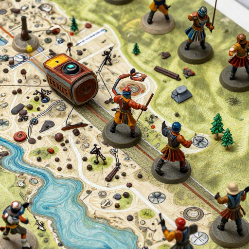

The Early Days
From an early age, I have been drawn to technology and problem solving. Growing up in a family of six, I learned quickly how to be adaptable, patient, and curious about the world around me. One of my earliest interests was coding. Even as a child, the idea of creating something from nothing, whether through simple programs or structured logic, captured my attention. Alongside this interest, I spent much of my life playing games, which further strengthened my appreciation for systems, mechanics, and creative design.
What is Now
These experiences naturally guided me toward pursuing computer science as an academic and professional path. I am currently in my second year of college studying computer science after graduating from high school. My goal in joining college was not only to gain technical knowledge, but also to develop a deeper understanding of how computer science applies to real world challenges. I enjoy learning beyond the classroom and often explore topics outside of required coursework, as I believe growth comes from curiosity and self driven exploration. This mindset has helped me build both technical skills and a strong foundation for continuous learning, which I see as essential in a constantly evolving field like technology.